3 Data analyses
3.1 Data preparation to get scores
This preparation step includes normalization, scaling of the data and identification of variable genes,
which are performed in order to infer scores on cells (such as cell cycle).
The normalization here is a simple log-normalization.
A second normalization (with SCTransform), more robust to UMI-based datasets analyses, will be performed later on.
obj_seurat <- NormalizeData(obj_seurat,
normalization.method = "LogNormalize",
scale.factor = 10000)
obj_seurat <- ScaleData(obj_seurat,
features = rownames(obj_seurat))
obj_seurat <- FindVariableFeatures(obj_seurat,
selection.method = "vst")It also includes an inspection of the PCs to select an adequate number of PCs.
obj_seurat <- RunPCA(obj_seurat,
features = VariableFeatures(object = obj_seurat),
verbose = FALSE,
npcs = 100)
ElbowPlot(obj_seurat, ndims = 100)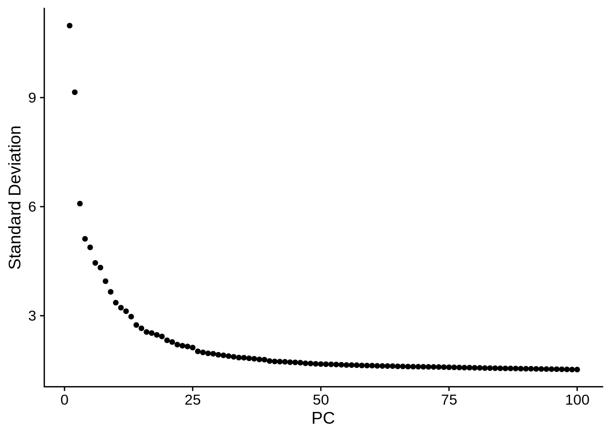
For the analyses to be comparable, we selected the same number of PCs for all of them and select the 25 first PCs.
npc <- 25
obj_seurat <- RunPCA(obj_seurat,
features = VariableFeatures(object = obj_seurat),
verbose = FALSE,
npcs = npc)
obj_seurat <- FindNeighbors(obj_seurat, dims = 1:npc) %>%
RunUMAP(dims = 1:npc)We will also define various colors palette for all the coming analyses.
colors_pal1 <- as.vector(yarrr::piratepal("appletv", plot.result = FALSE, trans = 0)[c(3,1,6)])
colors_pal2 <- as.vector(brewer.pal(n = 4, name = "Dark2"))
colors_pal3 <- as.vector(brewer.pal(n = 9, name = "Paired"))
colors_pal4 <- as.vector(yarrr::piratepal("basel", plot.result = FALSE, trans = 0.1)[1:9])
colors_pal <- list(Phase = colors_pal1,
Cell_type = colors_pal2,
Cell_subtype = colors_pal3,
Clusters = colors_pal4)
names(colors_pal[[1]]) <- c('G1', 'G2M', 'S')
names(colors_pal[[2]]) <- c('Progenitor', 'Neuron', 'Neural_crest', 'Mesoderm')
names(colors_pal[[3]]) <- c('RP', 'dp', 'p', 'pMN', 'p3', 'FP', 'Neuron', 'Neural_crest', 'Mesoderm')
names(colors_pal[[4]]) <- paste0('clust_', 1:9)
# Save color palettes
write.table(obj_seurat[[]],
file = paste0("data/raw/", params$gtf, "_colors_palette.tsv"),
quote = FALSE,
sep = "\t")3.2 Identify populations
The cells used in this dataset come from chick embryo neural tube dissection. We thus expect to find mostly neural progenitors and early neurons. However, during dissection, some adjacent cells are difficult to clean from the neural tube. We might find also blood, mesoderm and neural crest cells in our dataset, besides neurons and progenitors. In the following step, we use a set of neurogenesis markers to identify cells in our dataset.
Specifically, our main markers are on one side SOX2 (a pan-progenitor marker), and on the other side TUBB3, a marker of neurons. We use different strategies to identify our cell populations. First, a minimalist one just based on SOX2 expression. The reason for this is that most of the cells in the datasets are supposed to be neural progenitors, which express SOX2. This first classification will simply separate cells into SOX2+ (progenitors) and SOX2- (non-progenitors) populations. The non-progenitor population actually include the neurons, mesoderm and neural crest.
Second, a more advanced classification is performed based on a set of marker genes. For this purpose, we use the table of marker genes provided in the mouse spinal cord atlas from Delile et al. (2019). In this classification, cells are classified into progenitors, neurons, neural crest and mesoderm. Finally, we use a deeper level of classification for progenitors, according to the progenitors classification from Delile et al. (2019). See below for more details.
3.2.1 Get stats on some marker genes
features <- c('SOX2', 'TUBB3', 'PAX6', 'PAX7',
'ISL1', 'ISL2', 'NKX6-2', 'OLIG2',
'SHH', 'PRDM8', 'TWIST1', 'SOX10')
# Get quick access to metadata on genes
md_genes <- obj_seurat@assays$RNA@meta.features
# Check if features are in the dataset
features <- features[which(features %in% row.names(md_genes))]
print(features)## [1] "SOX2" "TUBB3" "PAX6" "PAX7" "ISL1" "NKX6-2" "OLIG2" "SHH"
## [9] "TWIST1" "SOX10"# Print metadata of these selected genes
DT::datatable(md_genes[features,],
extensions = c('Buttons', 'Scroller'),
options = list(
dom = 'Bfrtip',
buttons = c('csv', 'pdf'),
deferRender = TRUE,
scrollY = 200,
scrollX = TRUE,
scroller = TRUE))3.2.2 Plot each marker genes
plots <- list()
for (i in seq(1, length(features))) {
plots[[i]] <- FeaturePlot(obj_seurat,
features = features[i],
cols = c("grey90", rev(brewer.pal(5, "Spectral"))),
pt.size = 0.2,
ncol = 1) + NoLegend()
}
for (i in seq(1, length(features), 4)) {
if (c(i+3) <= length(features)) {
do.call(grid.arrange, c(plots[i:c(i+3)], ncol = 2, nrow = 2))
} else {
do.call(grid.arrange, c(plots[i:length(features)], ncol = 2, nrow = 2))
}
}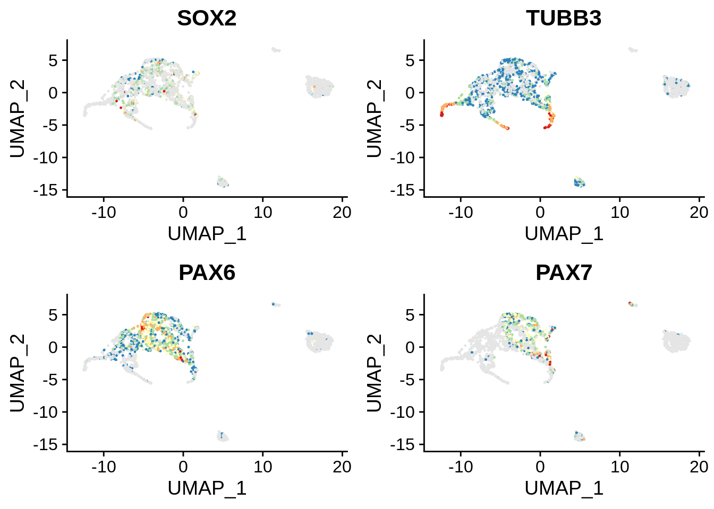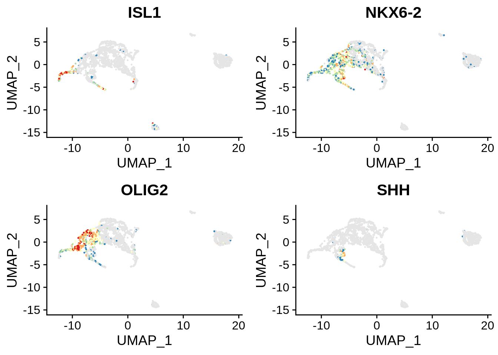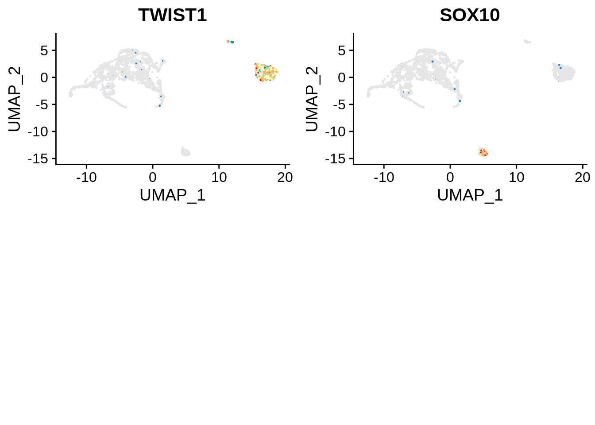
3.2.3 Classify cells based on known markers
3.2.3.1 Identify cell types
We here use markers genes defined in Delile et al. (2019) to identify progenitors, neurons and mesoderm cells.
pop_markers <- read.table(file = 'TableS1.csv',
header = TRUE,
sep = ';',
row.names = 1)
rownames(pop_markers) <- toupper(rownames(pop_markers))markers_genes <- list(Progenitor = c('SOX2', rownames(pop_markers)[1:26]) ,
Neuron = c('TUBB3', 'ELAVL3', rownames(pop_markers)[27:54]),
Neural_crest = c('SOX10', 'TPM1', 'LMO4', 'NPR3'),
Mesoderm = c('FOXC1', 'FOXC2', 'TWIST1', 'TWIST2', 'MEOX1', 'MEXO2'))
indices_to_remove <- c()
j <- 1
for (i in seq(1, length(markers_genes))) {
markers_genes[[i]] <- markers_genes[[i]][which(markers_genes[[i]] %in% rownames(obj_seurat))]
if(length(markers_genes[[i]]) > 1) {
obj_seurat <- AddModuleScore(obj_seurat,
features = markers_genes[i],
pool = NULL,
nbin = 5,
seed = 1,
ctrl = length(markers_genes[i]),
k = FALSE,
name = names(markers_genes[i]))
col_name <- names(markers_genes)[[i]]
col_name_val <- which(colnames(obj_seurat[[]]) == paste0(col_name, 1))
colnames(obj_seurat@meta.data)[col_name_val] <- col_name
} else {
indices_to_remove[j] <- i
j <- j + 1
}
}
markers_genes[indices_to_remove] <- NULL
print(markers_genes)## $Progenitor
## [1] "SOX2" "LMX1A" "MSX1" "MSX2" "PAX3" "PAX6" "PAX7" "ASCL1"
## [9] "GBX2" "DBX2" "SP8" "NKX6-2" "FOXN4" "OLIG2" "NKX2-2" "FOXA2"
##
## $Neuron
## [1] "TUBB3" "SHH" "LMX1B" "FOXD3" "LHX1" "LHX5" "ISL1"
## [8] "LBX1" "PAX2" "BHLHE22" "WT1" "PITX2"
##
## $Neural_crest
## [1] "SOX10" "TPM1" "LMO4"
##
## $Mesoderm
## [1] "FOXC1" "FOXC2" "TWIST1" "TWIST2" "MEOX1"# Update colors according to cell types found in the dataset
colors_pal$Cell_type <- colors_pal$Cell_type[names(markers_genes)]
for (f in names(markers_genes)){
print(FeaturePlot(obj_seurat,
features = f,
dims = c(1, 2),
cols = c("grey90", brewer.pal(9,"YlGnBu")),
pt.size = 0.2,
ncol = 1) + NoLegend())
}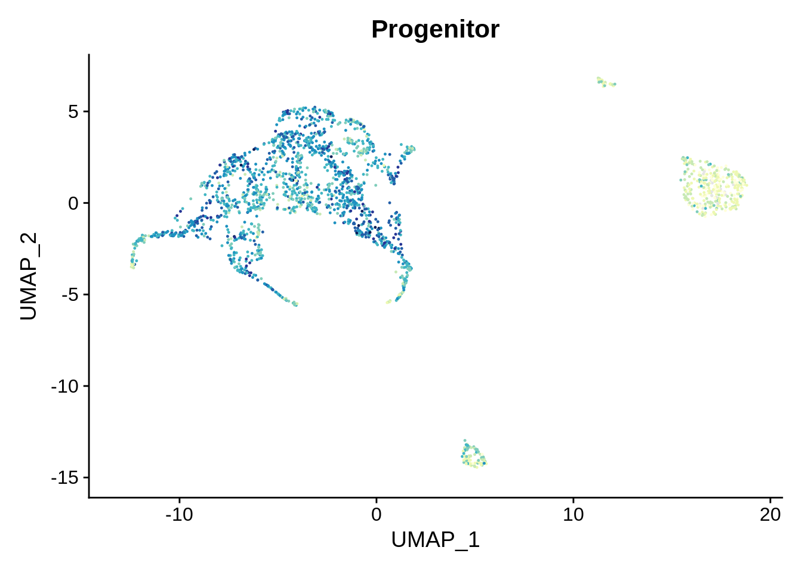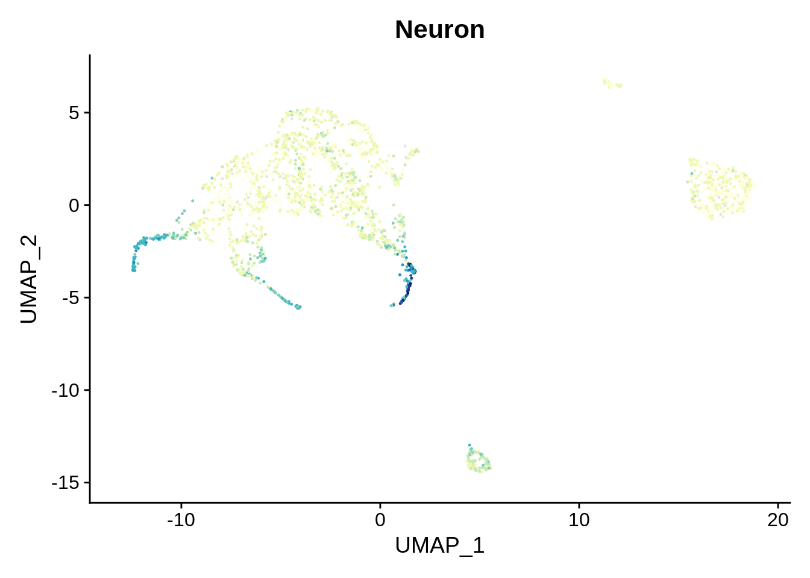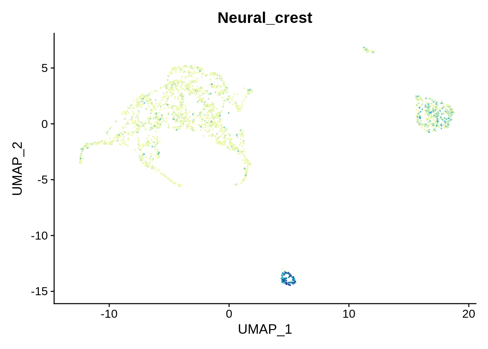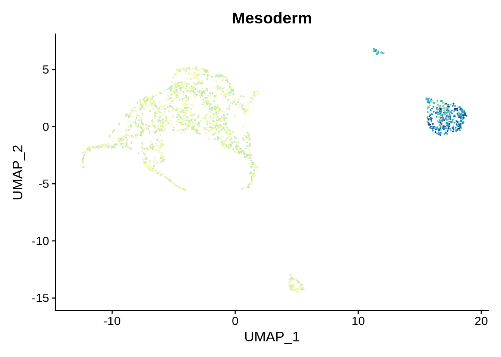
In order to assign a type to each cell, we take the highest value between each score among the scores of progenitors, neurons, mesoderm and neural crest.
names_cols <- c(names(markers_genes))
md_cells <- obj_seurat@meta.data
obj_seurat@meta.data$Cell_type <- colnames(md_cells[,names_cols])[max.col(md_cells[,names_cols], ties.method = "first")]
#types_levels <- c('Progenitor', 'Neuron', 'Neural_crest', 'Mesoderm')
obj_seurat@meta.data$Cell_type <- factor(x = obj_seurat@meta.data$Cell_type,
levels = names_cols)
Idents(obj_seurat) <- 'Cell_type'table(obj_seurat@meta.data$Cell_type)##
## Progenitor Neuron Neural_crest Mesoderm
## 1148 149 453 367DimPlot(obj_seurat,
reduction = "umap",
dims = c(1, 2),
label = FALSE,
cols = colors_pal$Cell_type,
label.size = 4,
pt.size = 0.2)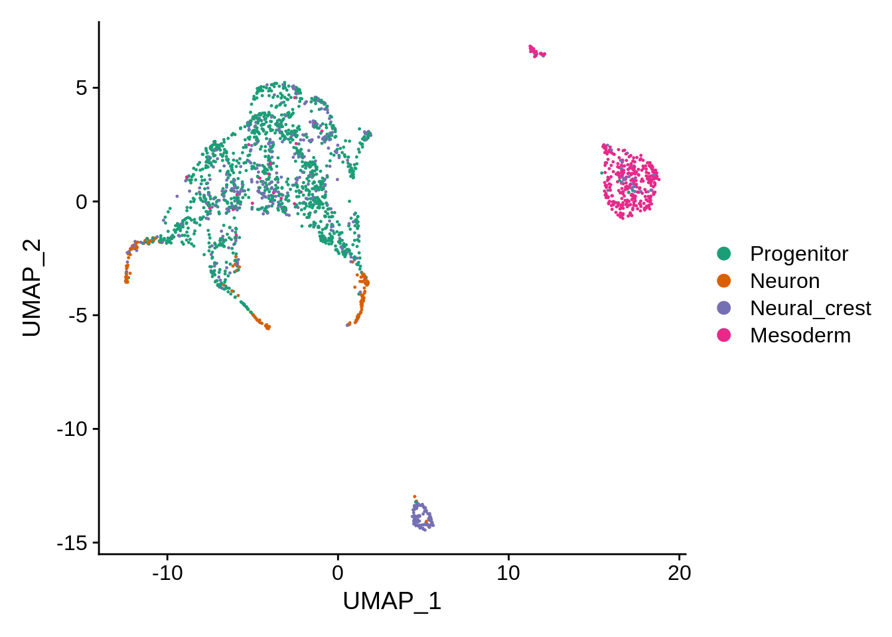
3.2.3.2 Identify cell subtypes
Now we look for progenitors subtypes. We follow the same process as above for the cell assignment.
markers_genes <- list(RP = rownames(pop_markers[which(pop_markers$RP == 1),]),
dp = c(rownames(pop_markers)[2:4], rownames(pop_markers)[6:15]),
p = c(rownames(pop_markers)[6:8], rownames(pop_markers)[14:19]),
pMN = rownames(pop_markers[which(pop_markers$pMN == 1),]),
p3 = rownames(pop_markers[which(pop_markers$p3 == 1),]),
FP = rownames(pop_markers[which(pop_markers$FP == 1),]))
indices_to_remove <- c()
j <- 1
for (i in seq(1, length(markers_genes))) {
markers_genes[[i]] <- markers_genes[[i]][which(markers_genes[[i]] %in% rownames(obj_seurat))]
if(length(markers_genes[[i]]) > 1) {
obj_seurat <- AddModuleScore(obj_seurat,
features = markers_genes[i],
pool = NULL,
nbin = 5,
seed = 1,
ctrl = length(markers_genes[i]),
k = FALSE,
name = names(markers_genes[i]))
col_name <- names(markers_genes)[[i]]
col_name_val <- which(colnames(obj_seurat[[]]) == paste0(col_name, 1))
colnames(obj_seurat@meta.data)[col_name_val] <- col_name
} else {
indices_to_remove[j] <- i
j <- j + 1
}
}
markers_genes[indices_to_remove] <- NULL
print(markers_genes)## $RP
## [1] "LMX1A" "MSX1" "MSX2" "PAX3"
##
## $dp
## [1] "MSX1" "MSX2" "PAX3" "PAX6" "PAX7" "ASCL1" "GBX2" "DBX2"
##
## $p
## [1] "DBX2" "SP8" "NKX6-2"
##
## $pMN
## [1] "SP8" "OLIG2"
##
## $FP
## [1] "FOXA2" "SHH" "LMX1B"# Update colors according to cell types found in the dataset
names_cols <- c(names(markers_genes), c(levels(obj_seurat@meta.data$Cell_type)))
names_cols <- names_cols[-which(names_cols == "Progenitor")]
colors_pal$Cell_subtype <- colors_pal$Cell_subtype[names_cols]
for (f in names(markers_genes)){
print(FeaturePlot(obj_seurat,
features = f,
dims = c(1, 2),
cols = c("grey90", brewer.pal(9,"YlGnBu")),
pt.size = 0.2,
ncol = 1) + NoLegend())
}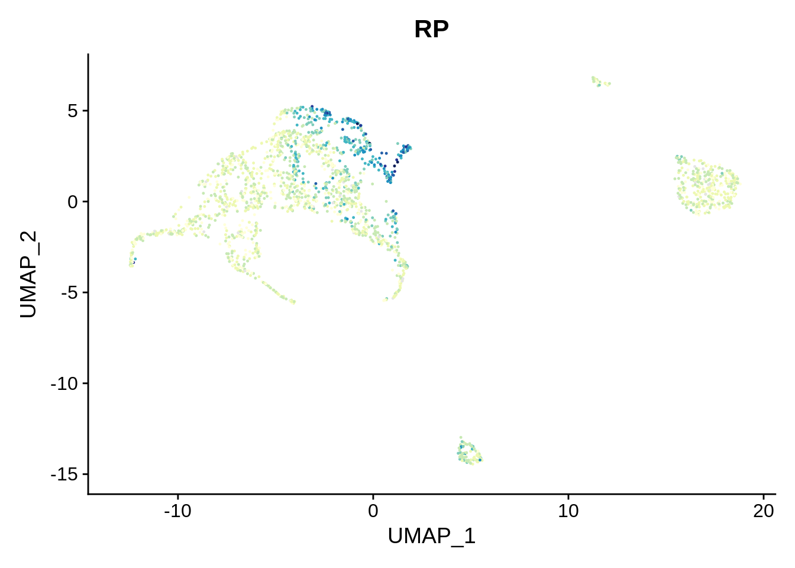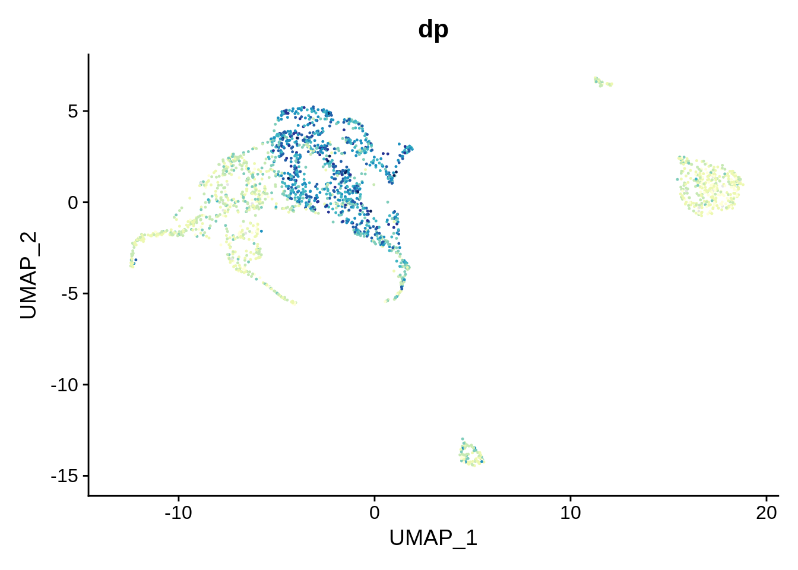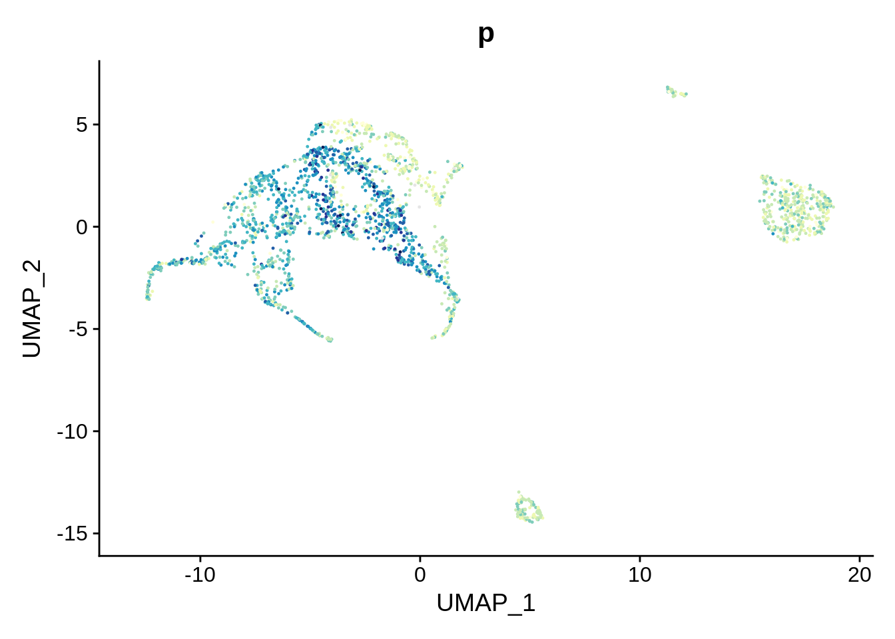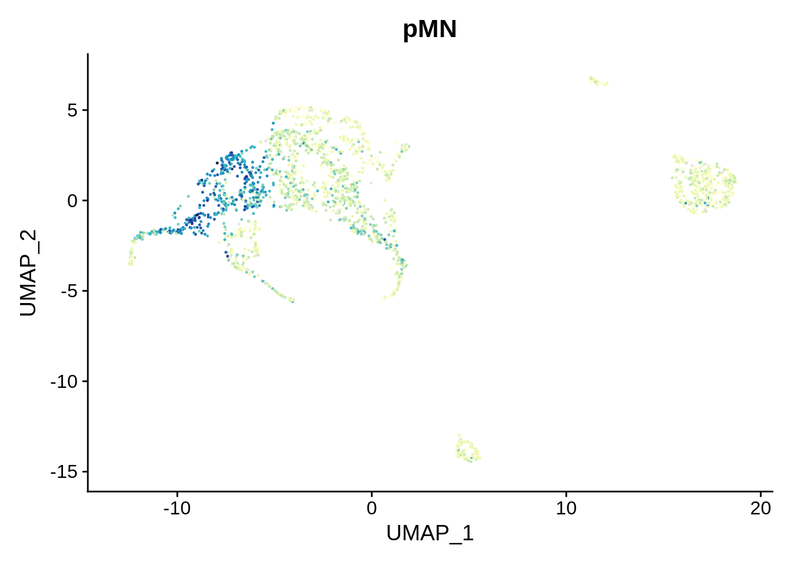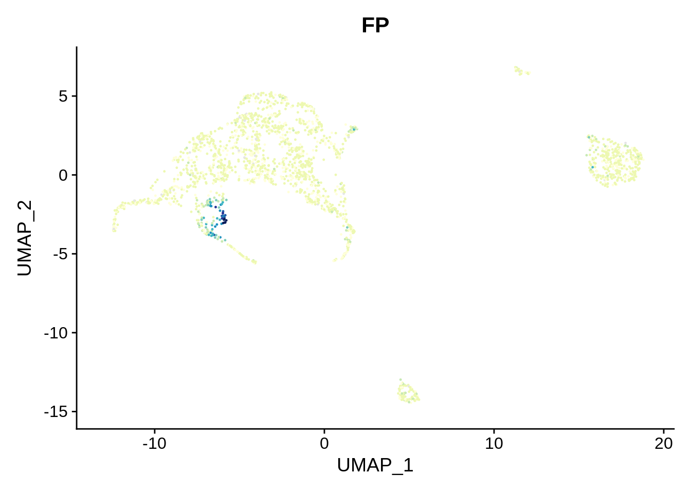
md_cells <- obj_seurat@meta.data
obj_seurat@meta.data$Cell_subtype <- colnames(md_cells[,names_cols])[max.col(md_cells[,names_cols], ties.method = "first")]
#subtypes_levels <- c('RP', 'dp', 'p', 'pMN', 'p3', 'FP', 'Neuron', 'Neural_crest', 'Mesoderm')
obj_seurat@meta.data$Cell_subtype <- factor(x = obj_seurat@meta.data$Cell_subtype,
levels = names_cols)
Idents(obj_seurat) <- 'Cell_subtype'table(obj_seurat@meta.data$Cell_subtype)##
## RP dp p pMN FP Neuron
## 264 256 409 468 118 101
## Neural_crest Mesoderm
## 156 345DimPlot(obj_seurat,
reduction = "umap",
dims = c(1, 2),
label = FALSE,
cols = colors_pal$Cell_subtype,
label.size = 4,
pt.size = 0.2)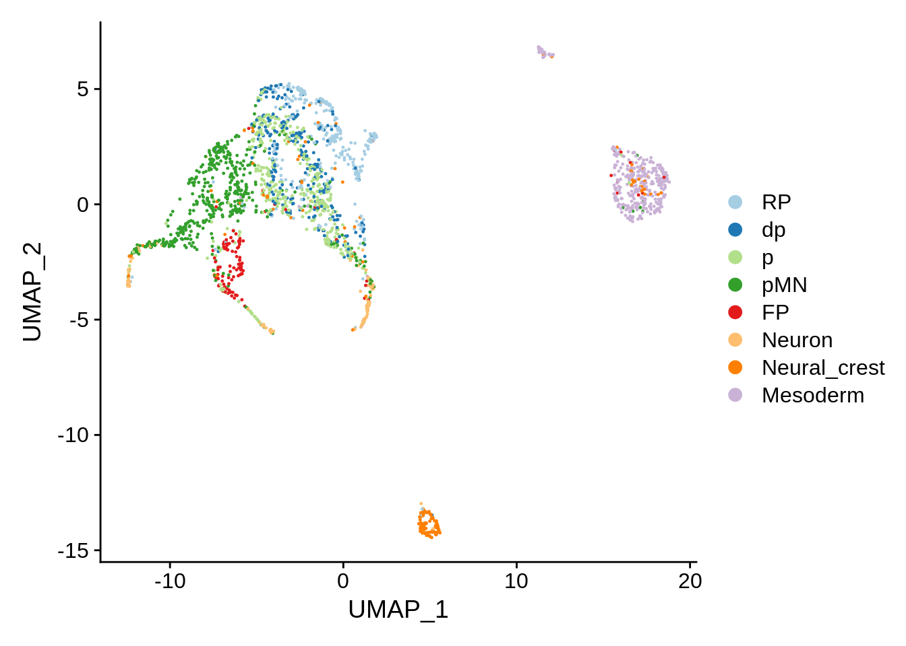
3.2.4 Assign cell status depending on SOX2 expression
Most of the cells in this dataset are expected to be neural progenitors. They are thus expected to express SOX2. We assign a score 1 to cells in which we detect SOX2 (progenitors), 0 to the others (non-progenitors).
obj_seurat[['SOX2_value']] <- obj_seurat@assays$RNA@counts['SOX2',]
# Value of SOX2 (distribution of the quantity detected in each cell in raw count)
table(obj_seurat@meta.data$SOX2_value)##
## 0 1 2 3 4 5
## 1669 352 73 20 2 1ggplot(obj_seurat@meta.data, aes(x = factor(SOX2_value))) +
geom_bar(fill = "steelblue") +
labs(x = "SOX2 raw count") +
theme_minimal()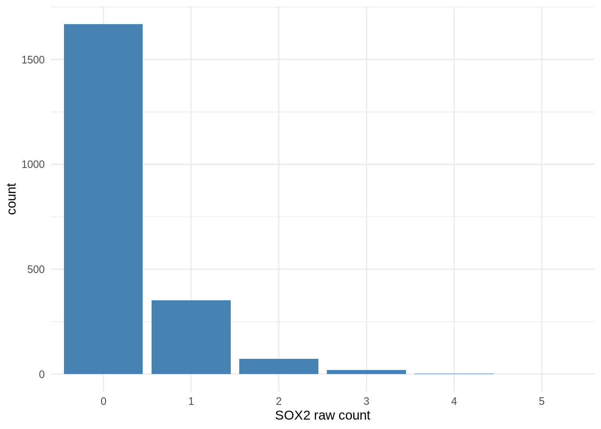
# SOX2 classification
df_sox2 <- ifelse(obj_seurat[[]]['SOX2_value'] > 0, 1, 0)
colnames(df_sox2) <- "SOX2_status"
obj_seurat@meta.data$SOX2_status <- as.factor(df_sox2)
# Cells amount according to SOX2 status
table(df_sox2)## df_sox2
## 0 1
## 1669 4483.3 Assign cell-cycle scores
We use the function CellCycleScoring of Seurat to assign a cell cycle phase to each cell.
The genes used for this classification are printed just below (s.genes and g2m.genes).
s.genes <- cc.genes.updated.2019[['s.genes']][which(cc.genes.updated.2019[['s.genes']] %in% rownames(obj_seurat))]
g2m.genes <- cc.genes.updated.2019[['g2m.genes']][which(cc.genes.updated.2019[['g2m.genes']] %in% rownames(obj_seurat))]
print(s.genes)## [1] "MCM5" "PCNA" "FEN1" "RRM1" "UNG" "MCM6" "DTL" "CENPU"
## [9] "RFC2" "GMNN" "SLBP" "CCNE2" "UBR7" "POLD3" "RAD51" "EXO1"
## [17] "TIPIN" "BLM" "USP1" "CLSPN" "CHAF1B"print(g2m.genes)## [1] "HMGB2" "CDK1" "NUSAP1" "BIRC5" "TPX2" "TOP2A" "NDC80"
## [8] "CKS2" "NUF2" "CKS1B" "TMPO" "CENPF" "TACC3" "SMC4"
## [15] "CKAP2" "BUB1" "KIF11" "ANP32E" "TUBB4B" "GTSE1" "HJURP"
## [22] "CDCA3" "CDC20" "RANGAP1" "NCAPD2" "KIF23" "LBR" "CKAP5"
## [29] "CTCF" "NEK2" "G2E3" "GAS2L3" "CENPA"obj_seurat <- CellCycleScoring(obj_seurat,
s.features = s.genes,
g2m.features = g2m.genes,
set.ident = FALSE)
obj_seurat@meta.data$Phase <- as.factor(obj_seurat@meta.data$Phase)
obj_seurat$CC.Difference <- obj_seurat$S.Score - obj_seurat$G2M.ScoreDimPlot(obj_seurat,
reduction = "umap",
dims = c(1, 2),
group.by = "Phase",
cols = colors_pal$Phase,
label = FALSE,
label.size = 4,
pt.size = 0.2)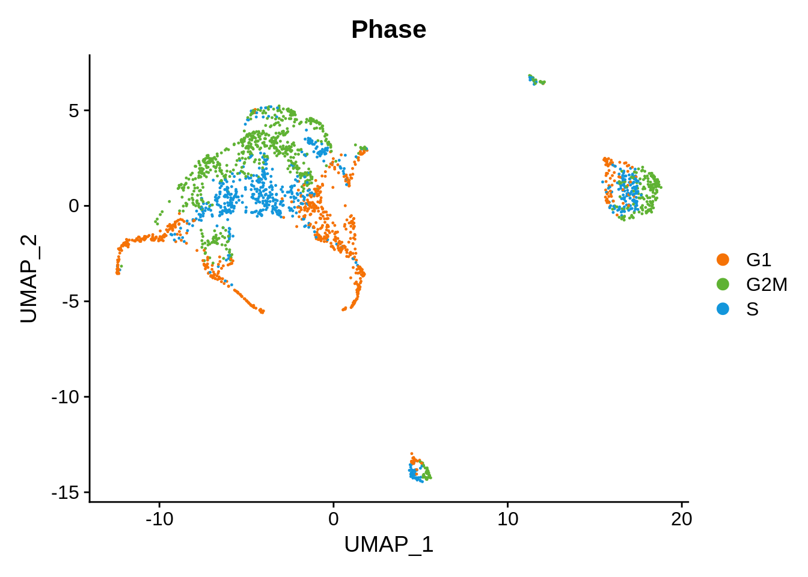
3.4 Summary plots
features <- c(unique(unlist(markers_genes)))
# CC Phase
x <- 'Phase'
table(obj_seurat[[]][x])##
## G1 G2M S
## 674 800 643prop.table(table(obj_seurat[[]][x]))##
## G1 G2M S
## 0.3183751 0.3778932 0.3037317Idents(obj_seurat) <- x
DotPlot(obj_seurat,
features = features) +
RotatedAxis() +
scale_colour_gradient2(low = "blue", mid = "lightgray", high = "red") +
theme(axis.text.x = element_text(size = 8)) + labs(x = "", y = "")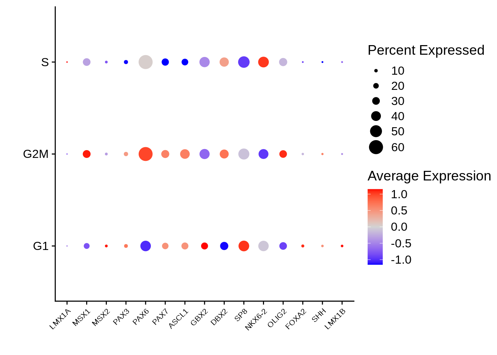
ggplot(obj_seurat[[]], aes_string(x = 'orig.ident', fill = x)) +
geom_bar(aes(y = (..count..)/sum(..count..))) +
scale_fill_manual(values = colors_pal$Phase) +
theme_minimal() +
scale_y_continuous(labels = percent) +
labs(x = "", y = "", title = "Proportion of cells in each cell cycle phase")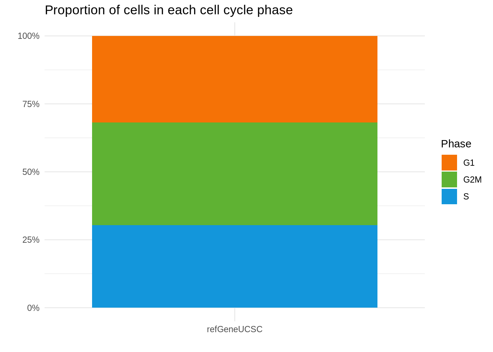
# Cell types
x <- 'Cell_type'
table(obj_seurat[[]][x])##
## Progenitor Neuron Neural_crest Mesoderm
## 1148 149 453 367prop.table(table(obj_seurat[[]][x]))##
## Progenitor Neuron Neural_crest Mesoderm
## 0.54227681 0.07038262 0.21398205 0.17335853Idents(obj_seurat) <- x
DotPlot(obj_seurat,
features = features) +
RotatedAxis() +
scale_colour_gradient2(low = "blue", mid = "lightgray", high = "red") +
theme(axis.text.x = element_text(size = 8)) + labs(x = "", y = "")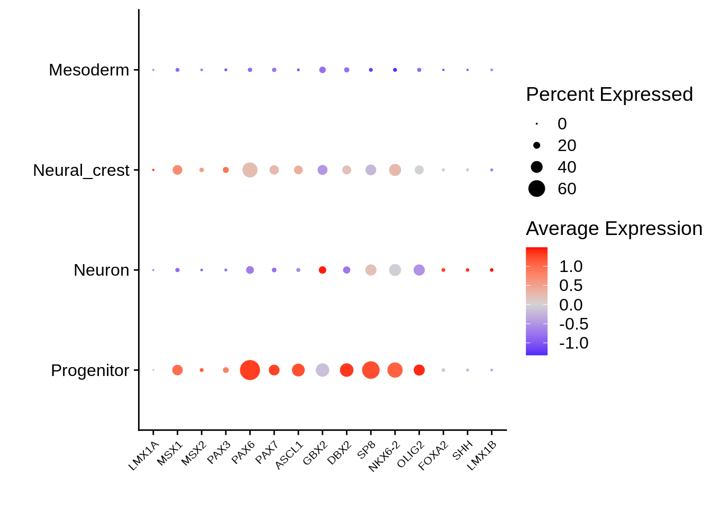
ggplot(obj_seurat[[]], aes_string(x = 'orig.ident', fill = x)) +
geom_bar(aes(y = (..count..)/sum(..count..))) +
scale_fill_manual(values = colors_pal$Cell_type) +
theme_minimal() +
scale_y_continuous(labels = percent) +
labs(x = "", y = "", title = "Proportion of progenitors and neurons")
# Cell subtypes
x <- 'Cell_subtype'
table(obj_seurat[[]][x])##
## RP dp p pMN FP Neuron
## 264 256 409 468 118 101
## Neural_crest Mesoderm
## 156 345prop.table(table(obj_seurat[[]][x]))##
## RP dp p pMN FP Neuron
## 0.12470477 0.12092584 0.19319792 0.22106755 0.05573925 0.04770902
## Neural_crest Mesoderm
## 0.07368918 0.16296646Idents(obj_seurat) <- x
DotPlot(obj_seurat,
features = features) +
RotatedAxis() +
scale_colour_gradient2(low = "blue", mid = "lightgray", high = "red") +
theme(axis.text.x = element_text(size = 8)) + labs(x = "", y = "")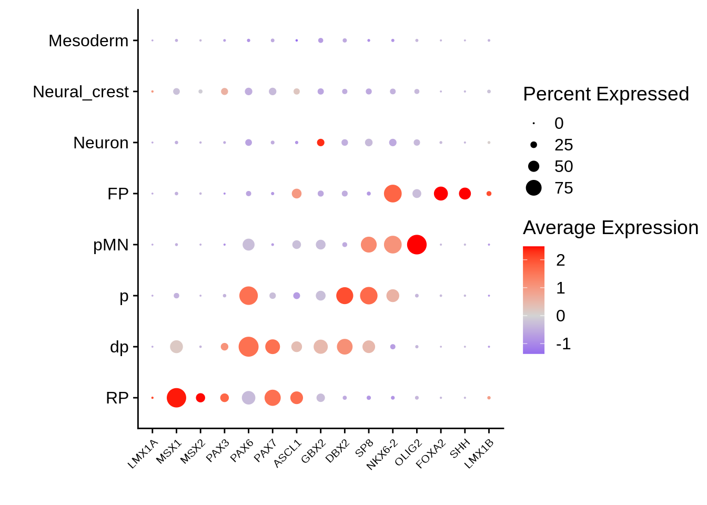
ggplot(obj_seurat[[]], aes_string(x = 'orig.ident', fill = x)) +
geom_bar(aes(y = (..count..)/sum(..count..))) +
scale_fill_manual(values = colors_pal$Cell_subtype) +
theme_minimal() +
scale_y_continuous(labels = percent) +
labs(x = "", y = "", title = "Proportion of subtypes")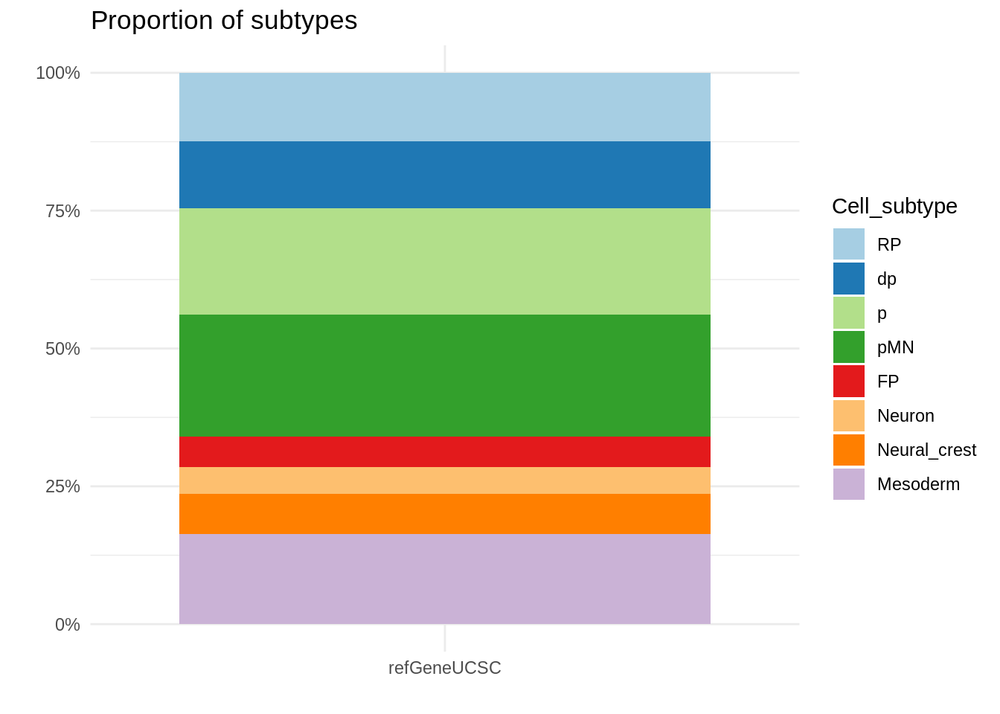
# SOX2 status
x <- 'SOX2_status'
table(obj_seurat[[]][x])##
## 0 1
## 1669 448prop.table(table(obj_seurat[[]][x]))##
## 0 1
## 0.7883798 0.2116202Idents(obj_seurat) <- x
DotPlot(obj_seurat,
features = features) +
RotatedAxis() +
scale_colour_gradient2(low = "blue", mid = "lightgray", high = "red") +
theme(axis.text.x = element_text(size = 8)) + labs(x = "", y = "")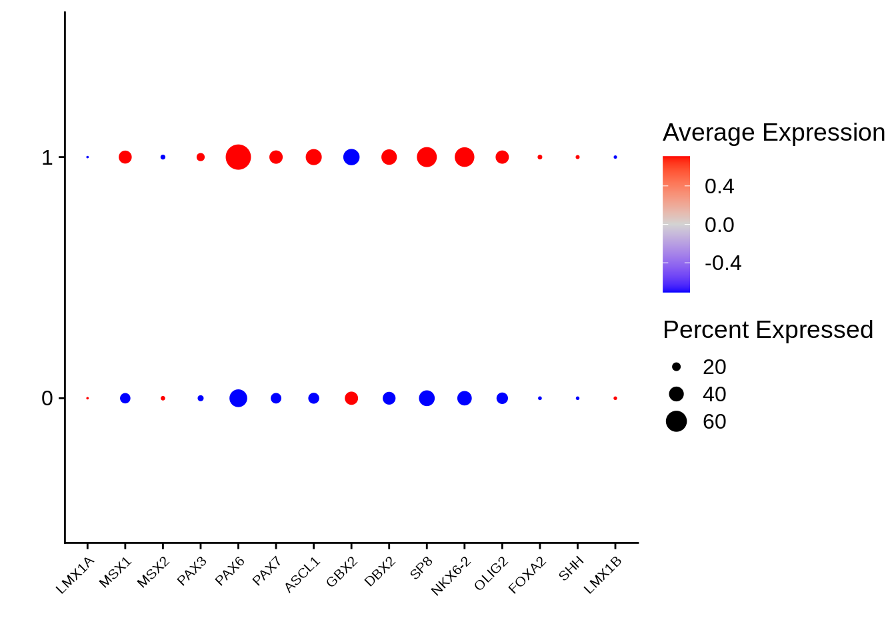
ggplot(obj_seurat[[]], aes_string(x = 'orig.ident', fill = x)) +
geom_bar(aes(y = (..count..)/sum(..count..))) +
scale_fill_viridis(discrete = T) +
theme_minimal() +
scale_y_continuous(labels = percent) +
labs(x = "", y = "", title = "Proportion of SOX2+ / SOX2- cells")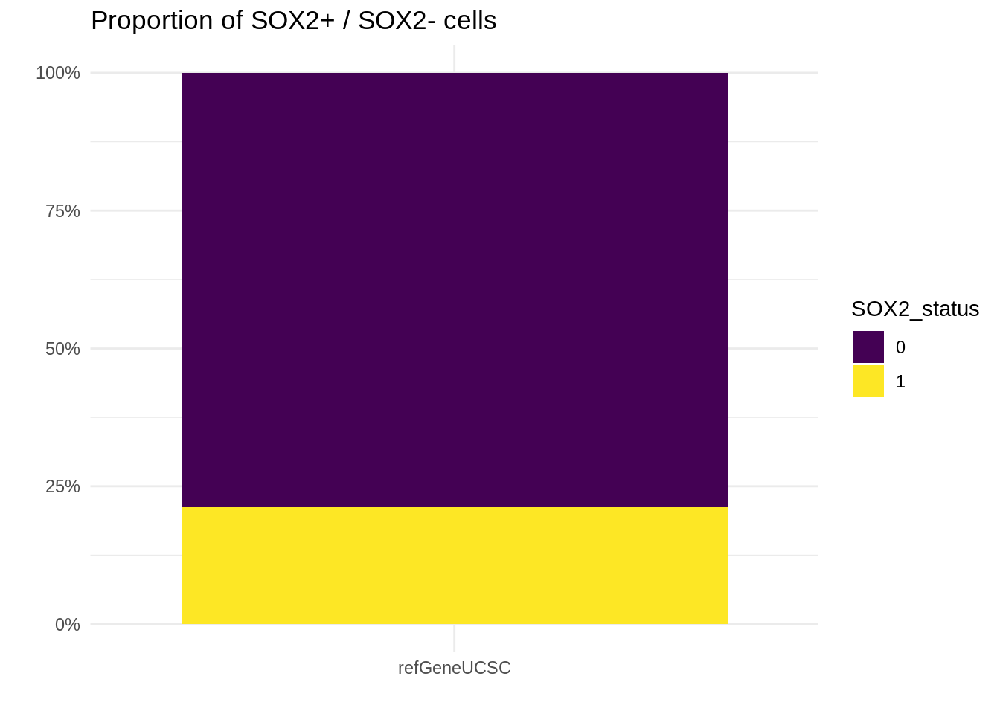
3.5 Second normalization step
From now-on, the data of the previous normalization will not be used anymore. It was a quick and basic normalization used only to pre-process the data. For the next steps, we will use an improved (but more time-consuming) normalization strategy with SCTransform. This approach removes the need for heuristic steps such as pseudocount addition or log-transformation. We also regress out the differences between cycling and non cycling cells.
obj_seurat <- SCTransform(object = obj_seurat,
vars.to.regress = c("CC.Difference"),
do.scale = TRUE,
verbose = FALSE)3.6 Find variable genes
obj_seurat <- FindVariableFeatures(obj_seurat, selection.method = "vst", nfeatures = 2000)
top10 <- head(VariableFeatures(obj_seurat), 10)
plot1 <- VariableFeaturePlot(obj_seurat)
plot2 <- LabelPoints(plot = plot1, points = top10, repel = TRUE)
plot2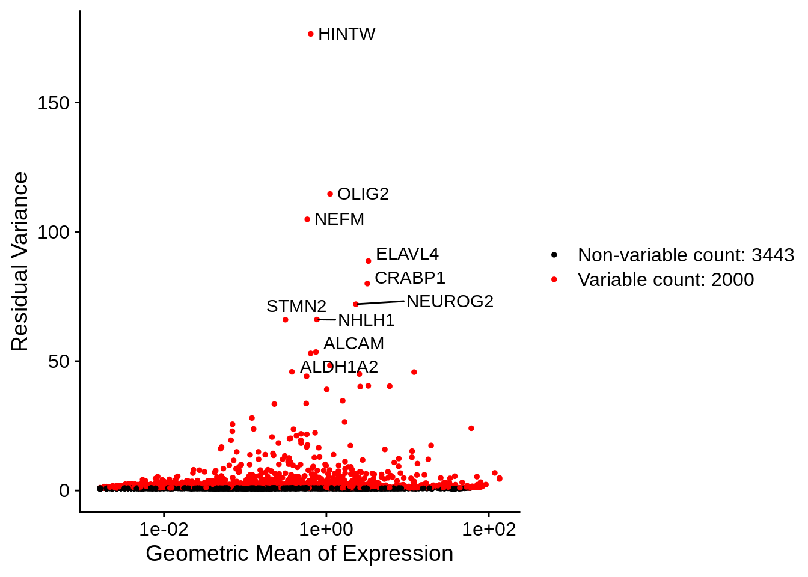
3.7 Clustering
We use SC3 to cluster the cells so we can use the same k for all the analyses (the number of clusters in Seurat are defined by the resolution and can vary).
# Run SC3
obj_sce <- as.SingleCellExperiment(obj_seurat)
rowData(obj_sce)$feature_symbol <- rownames(obj_sce)
counts(obj_sce) <- as.matrix(counts(obj_sce))
logcounts(obj_sce) <- as.matrix(logcounts(obj_sce))
num_k <- 9
obj_sce <- sc3(obj_sce,
ks = num_k, pct_dropout_min = 10,
pct_dropout_max = 90,
biology = FALSE)# Visualize SC3 clusters
sc3_plot_consensus(obj_sce, k = num_k, show_pdata = c("sc3_9_clusters", "Cell_subtype", "Phase"))
sc3_plot_silhouette(obj_sce, k = num_k)
# Put SC3 results inside Seurat object
obj_seurat@meta.data$sc3_9_clusters <- colData(obj_sce)$sc3_9_clusters
DimPlot(obj_seurat,
reduction = "umap",
dims = c(1, 2),
group.by = "sc3_9_clusters",
cols = as.vector(colors_pal$Clusters),
label = FALSE,
label.size = 4,
pt.size = 0.2)
Here are the contingency tables to visualize how many cells from the different cell types are in each cluster.
cont_table_n <- obj_seurat@meta.data %>%
group_by(Cell_subtype, sc3_9_clusters) %>%
summarise(n = n()) %>%
tidyr::spread(Cell_subtype, n)
cont_table_prop <- obj_seurat@meta.data %>%
group_by(Cell_subtype, sc3_9_clusters) %>%
summarise(n = n()) %>%
mutate(prop = n/sum(n)) %>%
subset(select = c("Cell_subtype","sc3_9_clusters","prop")) %>%
tidyr::spread(Cell_subtype, prop)
DT::datatable(cont_table_n,
extensions = c('Buttons', 'Scroller'),
options = list(
dom = 'Bfrtip',
buttons = c('csv', 'pdf'),
deferRender = TRUE,
scrollY = 200,
scrollX = TRUE,
scroller = TRUE))DT::datatable(cont_table_prop,
extensions = c('Buttons', 'Scroller'),
options = list(
dom = 'Bfrtip',
buttons = c('csv', 'pdf'),
deferRender = TRUE,
scrollY = 200,
scrollX = TRUE,
scroller = TRUE))3.8 Find DE genes between clusters
Idents(obj_seurat) <- 'sc3_9_clusters'
markers_DE <- FindAllMarkers(obj_seurat,
only.pos = TRUE,
min.pct = 0.25,
logfc.threshold = 0.25,
test.use = "MAST")
markers_DE <- markers_DE %>% filter(p_val < 1e-2)
top10 <- markers_DE %>%
filter(p_val < 1e-2) %>%
group_by(cluster) %>%
top_n(n = 10, wt = avg_log2FC)
DoHeatmap(obj_seurat,
features = top10$gene,
label = FALSE) +
theme(axis.text.y = element_text(size = 5))
3.9 Find DE genes between subtypes
Idents(obj_seurat) <- 'Cell_subtype'
markers_Subtype <- FindAllMarkers(obj_seurat,
only.pos = TRUE,
min.pct = 0.25,
logfc.threshold = 0.25,
test.use = "MAST")
markers_Subtype <- markers_Subtype %>% filter(p_val < 1e-2)
top10 <- markers_Subtype %>%
group_by(cluster) %>%
top_n(n = 10, wt = avg_log2FC)
DoHeatmap(obj_seurat,
features = top10$gene,
label = FALSE) +
theme(axis.text.y = element_text(size = 5))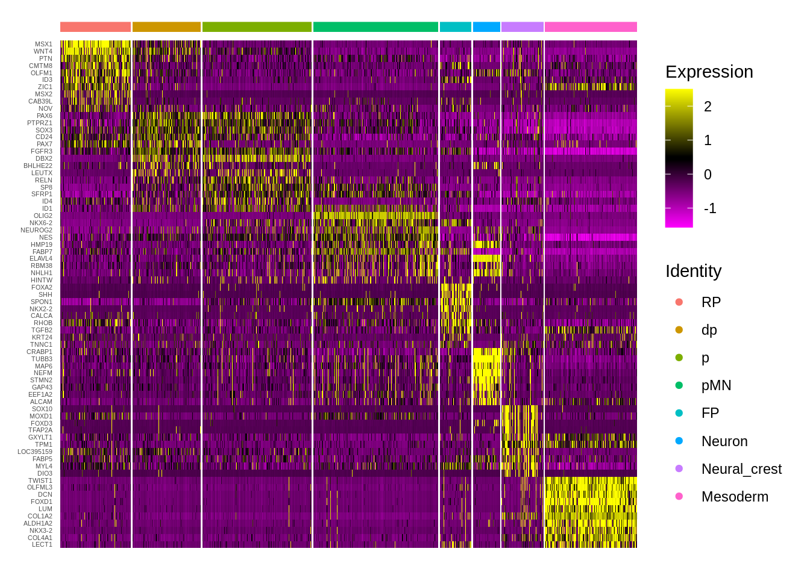
3.10 Find DE genes between SOX2+ and SOX2- populations
Idents(obj_seurat) <- 'SOX2_status'
markers_SOX2 <- FindAllMarkers(obj_seurat,
only.pos = TRUE,
min.pct = 0.25,
logfc.threshold = 0.25,
test.use = "MAST")
markers_SOX2 <- markers_SOX2 %>% filter(p_val < 1e-2)
top10 <- markers_SOX2 %>%
group_by(cluster) %>%
top_n(n = 10, wt = avg_log2FC)
DoHeatmap(obj_seurat,
features = top10$gene,
label = FALSE) +
theme(axis.text.y = element_text(size = 10))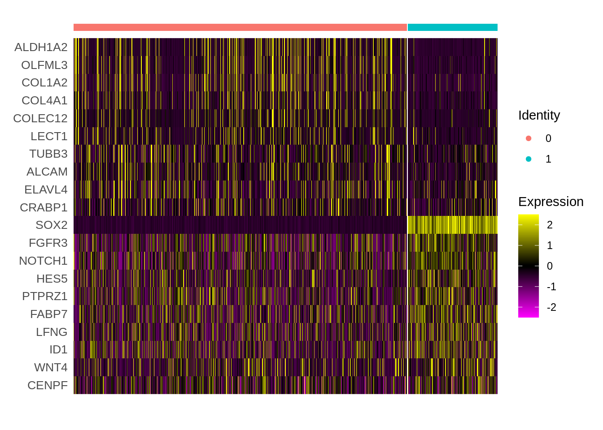
3.11 Save data
We save data both as RDS objects and TSV table to have a direct access to metadata if needed.
For reproducibility or re-analyses purposes, use RDS objects.
They can be loaded with the readRDS() command.
saveRDS(obj_seurat,
file = paste0("data/rds/", params$gtf, "_obj_seurat_final.rds"))
saveRDS(obj_sce,
file = paste0("data/rds/", params$gtf, "_obj_sce.rds"))
saveRDS(markers_DE,
file = paste0("data/rds/", params$gtf, "_markers_clustering.rds"))
saveRDS(markers_Subtype,
file = paste0("data/rds/", params$gtf, "_markers_Subtype.rds"))
saveRDS(markers_SOX2,
file = paste0("data/rds/", params$gtf, "_markers_SOX2.rds"))
# Save metadata on cells
write.table(obj_seurat[[]],
file = paste0("data/raw/", params$gtf, "_cells_metadata.tsv"),
quote = FALSE,
sep = "\t")
# Save metadata on genes
write.table(obj_seurat@assays$RNA@meta.features,
file = paste0("data/raw/", params$gtf, "_genes_metadata.tsv"),
quote = FALSE,
sep = "\t")